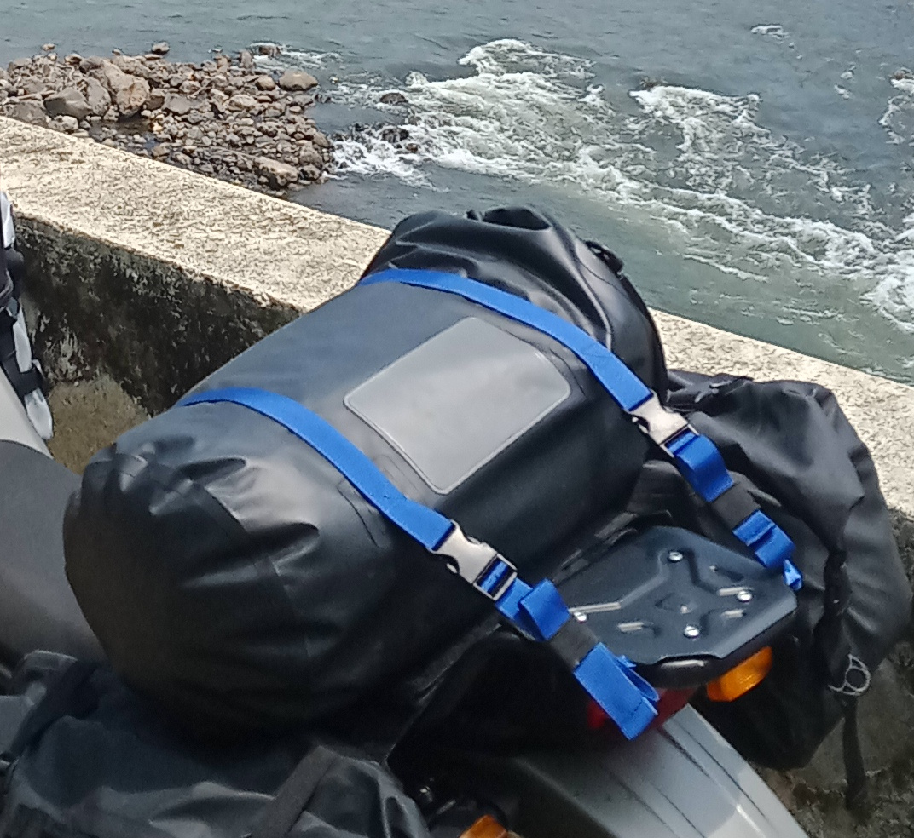

STUFFA BAG REVIEW
FP 25 L Dry Bag

I bought this “Stuffa Bag” as I call it, whilst in Panama and this is the first “Dry bag” bike luggage that I have ever owned. The bag holds 25 litres and cost me around $120 from the Royal Enfield dealer in Panama City.
The stuffa bag has now been subjected to a great deal of exposure to prolonged heavy rain over the past few weeks and I must say that it has been 100% waterproof.
So far the fastenings are robust and fit for purpose. The bag has two straps fixed to the top of the bag which have female Snap fasteners that attach to 4 straps. Each of these 4 straps is about 40 cm long and has a loop at the end which can be used to secure the strap to the bike. The other end of each strap has the male Snap fastener and once all of the straps have been attached to the bag, each strap can be adjusted to secure the bag to the bike.
The blue coloured straps are a bit bright for my tastes as I generally like all black bike luggage as it hides the dirt better but the alternative was a grey bag with fluorescent yellow straps.
The removal of the bag is made by releasing all 4 Snap fasteners and then each of the 4 securing straps can then be removed from the bike.
I use this stuffa bag to hold my laptop, toilet bag and my change of clothing (including my off bike shoes) so that when I am able to park my bike in a secured location, I only need to take this bag from the bike in order to get changed in to my street clothes and go out on foot exploring wherever I have stopped for the night without having to remove all of my other bags from the bike.
In general I think that this stuffa bag is of good quality and well designed albeit a little on the expensive side, and as I use it more I shall update this review as and when I have any other observations about it.
A link to the website where the FP bags specifications etc. can be viewed can be found in my “Useful Links” page of this website.